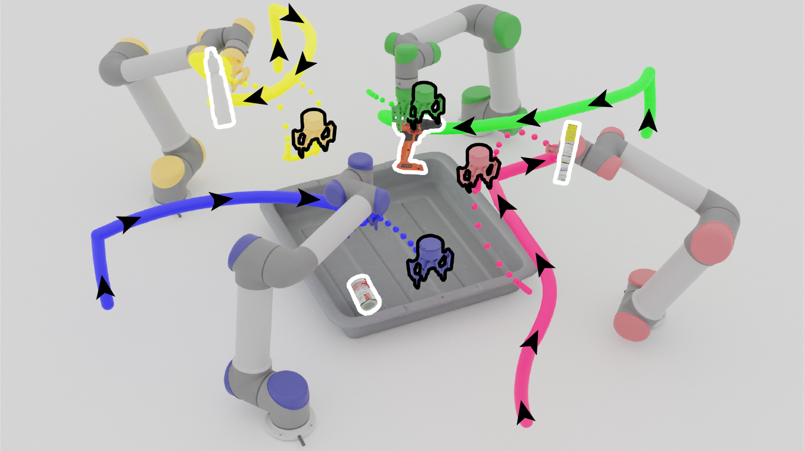

Learning a Decentralized Multi-arm Motion Planner
We present a closed-loop multi-arm motion planner that is scalable and flexible with team size. Traditional multi-arm robot systems have relied on centralized motion planners, whose runtimes often scale exponentially with team size, and thus, fail to handle dynamic environments with open-loop control. In this paper, we tackle this problem with multi-agent reinforcement learning, where a decentralized policy is trained to control one robot arm in the multi-arm system to reach its target end-effector pose given observations of its workspace state and target end-effector pose. The policy is trained using Soft Actor-Critic with expert demonstrations from a sampling-based motion planning algorithm (i.e., BiRRT). By leveraging classical planning algorithms, we can improve the learning efficiency of the reinforcement learning algorithm while retaining the fast inference time of neural networks. The resulting policy scales sub-linearly and can be deployed on multi-arm systems with variable team sizes. Thanks to the closed-loop and decentralized formulation, our approach generalizes to 5-10 multi-arm systems and dynamic moving targets (>90% success rate for a 10-arm system), despite being trained on only 1-4 arm planning tasks with static targets.
Paper
Team


Bibtex
@inproceedings{ha2020multiarm,
title={Learning a Decentralized Multi-arm Motion Planner},
author={Ha, Huy and Xu, Jingxi and Song, Shuran},
booktitle={Conference on Robotic Learning (CoRL)},
year={2020}
}
Video
Acknowledgements
We would like to thank Google for the UR5 robot hardware. This work was supported in part by the Amazon Research Award, the Columbia School of Engineering, as well as the National Science Foundation under CMMI-2037101.
Contact
If you have any questions, please feel free to contact Huy Ha